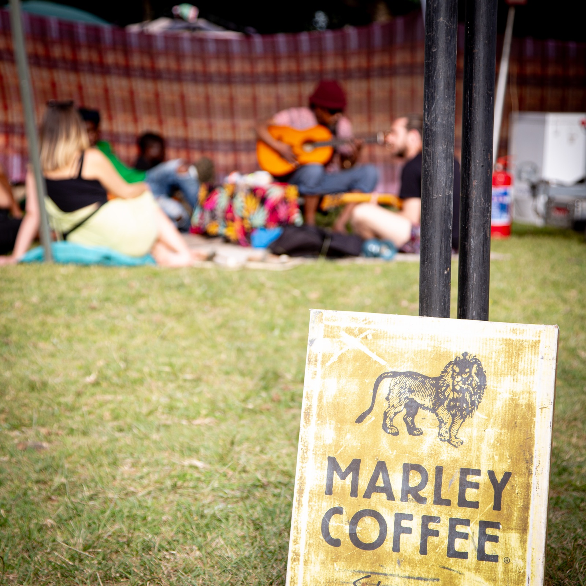
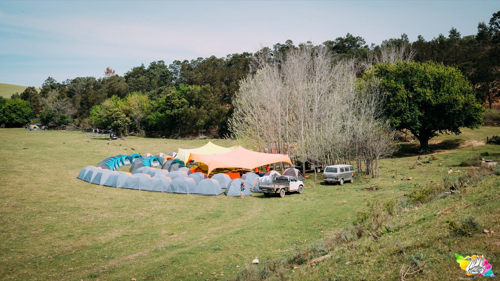

Vend at Earthdance
Earthdance Cape Town brings together food and beverage vendors, clothing and wearable goods, art, craft and handmade offerings, wellness spaces and other aligned traders as part of a curated festival village. We are looking for vendors who add real value to the gathering and fit the spirit of the event.
Not just a row of stalls
The market at Earthdance is part of the atmosphere of the event: a place where people eat, browse, meet, rest, discover and connect. We want the vendor area to feel thoughtful, welcoming and alive.
Good festival markets do more than sell things. They help shape the culture of the space. Food, craft, clothing, wellness and gathering areas all affect how people move, linger, meet one another and remember the event.
In that sense, the relationship is mutual. The gathering supports the traders, and the traders help create the warmth, texture and community life of the gathering.
We are especially interested in offerings that feel:
- well made
- useful
- beautiful
- nourishing
- community-minded
- aligned with the overall Earthdance ethos
Kinds of vendors we welcome
Food & beverage
Real food, well made, served with care — from full meals to coffee and treats.
Clothing & wearables
Clothing and wearable goods with genuine craft or character.
Art, craft & handmade
Original work, handmade items and things worth keeping.
Wellness & healing
Wellness or healing offerings that suit an outdoor, multi-day gathering.
Other aligned offerings
Thoughtful, relevant festival goods or services that don't fit a neat box.
If you are unsure whether your offering is the right fit, send it through anyway with a clear explanation of what you do.



The market village at Earthdance 2025 · Alison Swan Photography, BEELEAF Photography
Stall packages for 2026
Seven packages are confirmed for 2026 — four for food and beverage vendors, three for market (non-food) traders. No deposit is required on any package this year: the total fee is what you pay.
Every package includes waste removal as part of the event's waste and sustainability approach. Food packages include a water connection; market stalls trade without one.
| Package | Type | Footprint (m) | Total fee | Power | Water | Waste removal |
|---|---|---|---|---|---|---|
| Food XL | Food | 6 × 12 | R2,500 | 32A | Yes | Yes |
| Food Large | Food | 6 × 9 | R2,000 | 32A | Yes | Yes |
| Food Medium | Food | 6 × 3 | R1,500 | 16A | Yes | Yes |
| Food Small | Food | 3 × 3 | R1,000 | 16A | Yes | Yes |
| Market Large | Non-food | 6 × 9 | R1,500 | 16A | No | Yes |
| Market Medium | Non-food | 6 × 3 | R1,200 | 16A | No | Yes |
| Market Small | Non-food | 3 × 3 | R800 | 16A | No | Yes |
Choosing a package
- Food XL (6×12) and Food Large (6×9) suit full kitchen setups — trailers, marquee kitchens, multi-station stalls. Both carry 32A power for serious equipment, plus water and waste removal.
- Food Medium (6×3) is the fit for a single-lane food stall or coffee setup with moderate equipment on 16A power, with water and waste removal included.
- Food Small (3×3) works for compact offerings — treats, juices, a tight one-person operation — with 16A power, water and waste removal.
- Market Large, Medium and Small give non-food traders a 6×9, 6×3 or 3×3 footprint respectively, each with 16A power and waste removal. There is no water connection at market stalls, so plan accordingly.
Fees are per stall for the full festival weekend. Power figures are the supplied circuit rating — tell us in your application what equipment you plan to run so we can confirm your setup fits your package.
How vendors show up matters
We are looking for vendors who understand that Earthdance is a community gathering, not only a commercial footprint.
The strongest vendors at Earthdance are not only there to trade. They help hold the atmosphere of the event through the way they show up, the care they bring to their stall and the way they engage with the people around them.
We want the market space to feel like an extension of the wider festival culture: welcoming, respectful, creative and alive. If your offering helps nourish that kind of environment, we want to hear from you.
Helping us build the momentum
As part of the Earthdance vendor community, confirmed vendors will be asked to support our ticket-sales giveaways with prizes connected to their offering. These could include physical products, services offered at the festival, vouchers or discount codes — and vendors are welcome to contribute as much as feels comfortable.
We will coordinate the details during onboarding. When a vendor's contribution is featured, we will credit and tag them in the related promotion, giving our audience another opportunity to discover the people and offerings shaping the Earthdance market village.
What we value
- quality and care
- good communication
- reliability
- respect for people and place
- clean, well-run stalls
- offerings that suit the tone of the event
From application to trading
What to prepare before applying
- your business or stall name
- a short description of what you offer
- photos or links if available
- your setup size and space needs
- any power or special requirements
- your contact details
- any previous event experience that may help us understand your setup
- ApplySubmit your application through the vendor application form.
- ReviewWe review applications based on fit, category mix, practical requirements and overall balance across the market space.
- ConfirmationIf your application is successful, we will send you the next-step details, including onboarding information, operating requirements and deadlines.
- Payment & onboardingConfirmed vendors complete payment and onboarding by the required dates.
Caring for the land that holds the gathering
Earthdance asks vendors to work with us in reducing waste and caring for the land that holds the gathering. All vendors will be expected to support the event's waste and sustainability approach.
This includes:
- using sustainable packaging practices wherever possible
- avoiding unnecessary single-use items
- no single-use plastic straws
- separating waste correctly at source
- food vendors separating compostable waste from other waste streams
- following all site waste handling instructions provided before and during the event
Food and beverage vendors should be prepared for a higher level of waste responsibility, including correct separation of food waste for composting where required.
Before you apply
- Vendors must operate responsibly and respectfully on site.
- Confirmed vendors will be asked to contribute to pre-festival giveaways through products, services, vouchers or discount codes. Contributors will be credited in the related promotion.
- Final stall allocation is at the organisers' discretion.
- Some categories may be capped to keep the market balanced.
- Specific trading rules, arrival windows and setup instructions will be shared with accepted vendors.